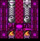
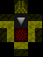
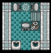
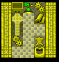
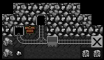

Misc Furnaces ::: Bombardier ::: Bonfire ::: Firepit ::: Kiln ::: Batch Kiln ::: Glassblower ::: Melting Pot ::: Totems ::: Totem of the Thieving Kea :: Totem of the Raging Badger ::: Lodges ::: Sisha Lodge ::: Sweat Lodge ::: Mythical Huts ::: Druids Hut ::: Hexers Hut ::: Soothsayers Hut ::: Witchers Hut ::: Stolen Tech ::: Magma Generator ::: Soul Forge ::: Tinkerers Shop ::: Mineshaft ::: Gremlin Chemist ::: Warpstone Shrine ::: |
Misc FurnacesBombardier Build labor: Leatherwork Skill: Tinkerer Bombardiers are kobolds using the totem-sling to throw bombs at enemies. Ammunition is produced in tiny batches of 3, which can be filled with many different powders or abilities. You can take blackpowder from the chemist to make exploding ones, or you take thread to make a webbing bomb. The Soothsayers hut can also help with magical fillings, polymorph transforms the enemy into harmless creatures, or you can produce sleeping powder or even fill the bombs with poison. You can create booby-traps as well, a trap component that uses totem-bombs as ammo. This allows for AoE traps. Keep in mind that kobolds will keep filling a booby-trap with all sorts of totem-bomb ammo, you cant control which ammo type goes where. The easiest way for some control is to wait till 3 bombs are loaded and then forbid the trap. Any normal weapon trap will do.BonfireBuild labor: Any Skill: Smelting The bonfire has only two reactions. Large and small fires. You need 1 log for the small one, and 5 logs and 1 fuel for the large fire, which will burn for 9 months. It has plenty of uses however, from repelling invasion by causing a bushfire, cleaning areas, using a dump-zone to pile refuse on a large fire, or even building one down in the caverns, to get rid of critters and vermin. Remember, even moss or the crystal cavern can burn. Firepit Build labor: Architect & Woodburner Skill: Woodburning The firepit allows you to burn wood for coal, and burn a multitude of items. You can make coal from wooden items and you have a chance to create ash from leather, cloth and plant items. This building is mostly to clean up your fort and produce fuel. Remember, you cant dig for coal as kobolds. Kiln
Build labor: Architect & Oven Operator Skill: Oven Operating The kiln allows the creation of furniture and items directly from clay. You only need a clay collection zone, give the collect order in your clay oven and a unit of fuel. Batch Kiln
Build labor: Architect & Oven Operator Skill: Oven Operating The batch kiln is the bigger version of the kiln. It creates exactly the same types of items, but is much more fuel efficient. It creates 5 times more in a single reaction then its smaller bretheren. Glassblower Build labor: Architect & Glassmaker Skill: Glassmaking The glassblower can create a multitude of different objects from clear, green and crystal glass. It is a simple extension to the glass furnace. Barrels, bins, buckets and beds can be made, as well as several basic weapons. You will need fuel for these reactions. Melting Pot
Build labor: Architect & Furnace Operator Skill: Smelting The melting pot destroys slag. Slag is a smelting by-product and has no use. Whenever you produce metal bars you start clogging up your smelters with slag. For each continuosly running smelter you should have one melting pot. TotemsTotem of the thieving Kea
Build labor: Architect & Animal Armorer Skill: Animal Armoring The totem can run two reactions. You can either enlarge a kea to a giant kea, or upheave them into a kea man. You need a grow or upheave hex from the Hexers Hut for this. You need to pasture keas on the workshop for it to work. You can buy them either at embark or order them from a caravan. You can also transform any changeling for free into a kea. Totem of the raging Badger
Build labor: Architect & Animal armorer Skill: Animal armoring The totem can run two reactions. You can either enlarge a honey badger to a giant honey badger, or upheave them into a honey badger man. You need a grow or upheave hex from the Hexers Hut for this. You need to pasture honey badgers on the workshop for it to work. You can buy them either at embark or order them from a caravan. You can also transform any changeling into a honey badger. LodgesSisha Lodge
Build labor: Architect & Furnace Operator Skill: Smelting The shisha lodge can stop tantrums before they even start. It removes all bad thoughts from a Kobold. Of course you need something to smoke first. You can make tobacco from plant leaves. All bushes, grasses and weeds can produce leaves. Thats quarry bush, shadowleaf bush, blade weed, rat weed, longland grass, pig tail grass and cave wheat grass. You can choose between wood or coke as fuel. To use it specify the kobold you want calmed down with a workshop profile, enable his furnace operating/smelting labor, and then take tobacco and coke/wood to the sisha lodge. The kobold that runs the reaction will be calm afterwards. Sweat Lodge
Build labor: Architect & Furnace Operator Skill: Smelting The sweat lodge helps your kobold to heal. You can either heat it up with wood or coal and raises the recuperation of the kobold doing the reaction. You can also dreamwalk with your spirit animal. Only normal kobolds with a birth sign can do this, so Druids and Witchers, who have forsaken their signs, are excluded. This longer sweat lodge session needs 5 coke and 5 wood and fully heals the kobold doing it, even growing back lost limbs and fixing nerve damage. Mythical HutsDruids Hut
Build labor: Architect & Sorcery Skill: Sorcery The druids hut allows the creation of your melee mages, the druids. Simply take 3 units of food and three barrels of drink, and tell a kobold to meditate. He will take his provisions and stay at the hut for 6 months. After this he will turn into a druid. If these go into combat they transform into a great Spirit Bear. Prone to rage and armored in its steel-grade aura it is a great addition to your army. After one week the druid transforms back into a kobold, being weakened for one week. Dizzy and slugish they have to gather their strength again, and after this second week they can transform again. Kobold Druid => Bear for 1 week => Weak Kobold for 1 week => Kobold Druid. Note: Since druids drop their equipment on transformation it would make sense not to give them any in the first place, to avoid haulers running out to claim it. Hexers Hut
Build labor: Architect & Sorcery Skill: Sorcery You can create totems here from dye and wood. Your kobolds can throw the bones to foretell hexes. There is a small chance that a hex is created, one of five types.The bad ones are Sickness, Madness and Slow, and the good ones up Upheave and Grow. Each bad hex can be applied to any weapon and will affect anyone hit by it with its effect. Each good hex can be used at the Totem of the Kea/Badger. Slow might decrease the speed by 25% Sickness might cause nausea and vomiting. Madness might turn the target crazed for a short time. Grow will turn one Kea/Honey Badger into a giant version. Upheave will turn one Kea/Honey Badger into a animal man version. Soothsayers Hut
Build labor: Architect & Sorcery Skill: Sorcery Your soothsayer can cure vampirism and detect werebeasts. In case of undeads, this is also the place to go. Sadly, this is for future updates, and currently the soothsayer can only do: Cure vampirism. Make magical fillings for totem-bombs, sleeping powder, voodoo powder or polymorph powder. In future updates I want to add werebeast and undead-related reactions to this building. Witchers Hut
Build labor: Architect & Sorcery Skill: Sorcery Kobolds can become witches and witchers in this building. You need many reagents for this, three gems, three bone types, three totems, three ash bars and some dye. Witches can throw webs of shadow and entangle single enemies in roots. Witchers can curse enemies with sickness and slow them down. Both castes can learn an additional 15 spells each. The first three need reagents you can produce yourself, a hide spell, a haste spell and a blood-spike ranged attack. The other 12 are learned from mojos you have to steal from orcs or frost giants. There is not really any good way to show who learned which spell, so you have to rely on your memory, at least till the "showunitsyndrome.rb" for dfhack is running smoothly. Stolen TechMagma Generator
Build labor: Architect & Furnace Operator Skill: Furnace Operator ***Plan stolen from Dwarves*** Kobolds can melt metal objects here without the need for fuel, make tanker carts and fill them with magma. This allows slow, but steady, filling of magma moats and building of magma boobytraps. Soul Forge
Build labor: Architect & Alchemy Skill: Alchemy ***Plan stolen from Chaos Dwarves*** You can sacrifice kobolds for metal bars in the Soul Forge. You will get between 1-3 bars for each soul you offer, killing the kobold in the process. You can also sacrifice a bold for a specific orichalcum item. You can get a weapon and a full set of platearmor this way, the best gear you can ever hope for. Just for the small price of 6 kobold lifes. Tinkerers Shop Build labor: Tinkerer & Mechanic
Skill: Researching/Inventing ***Plan stolen from Gnomes*** The tinkerer can process clockwork parts gained from Automatons to either batches of mechanisms, or batches of random trap components. You can also upgrade your self-made trap components in this workshop. Every trapcomp has 3 stages, so you can upgrade twice. They get either heavier, sharper, get an extra hit... only exception is the spike. Here you can choose between sharper, which more penetration value, or serrated, with bigger cutting area. Mineshaft Build labor: Architect & Miner Skill: Mining ***Plan stolen from Troglodytes*** The mineshaft can produce simple rock boulders, for an input of carts and candles. You cannot dig for gems, ore or flux, but only for simple stone types. You need one cart and one candle. You have a 90% return rate on the cart and 35% for the candle, so you burn through candles quickly. You can also try to find rock items in the mines, usually those are anvils and rather crude weapons left by the troglodytes in their tunnels. Gremlin Chemist
Build labor: Architect & Chemist Skill: Chemistry ***Plan stolen from Gremlins*** You can remove rust from rusty iron or steel, which only take one unit of the rusted metal to do. You can also produce oil from tallow, which is a lot faster and easier then growing plants to do so. 3 globs of tallow give one unit of oil. The most important function of the chemist is the production of blackpowder, which can be used to produce exploding ammo. You will need gypsum/brimstone and potash/saltpeter for this. Since you cannot dig rock in the normal way, you will need the mineshaft workshop as well, which is stolen from the troglodytes. Blackpowder can also fill totem-bombs for AoE traps. Exploding ammo might start fires, so take care. Warpstone Shrine
Build labor: Architect & Alchemy Skill: Alchemy ***Plan stolen from Skaven*** The Warpstone Shrine is build from highly poisonous warpstone. A skaven race item, this stone causes unstable mutations and other usually not beneficial effects in creatures. You can currently mutate any pet you have to a changeling, which can be used in the Arena or any other creature-based transformation.  |